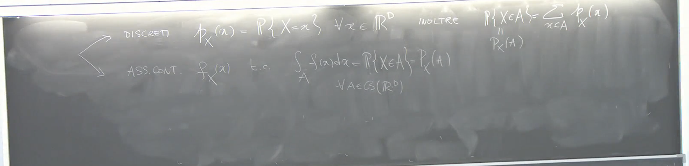
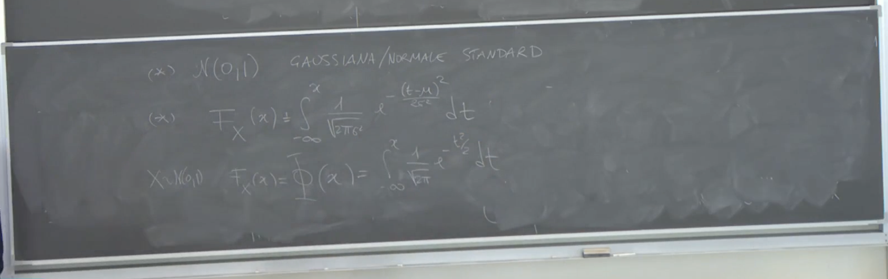

2025-04-08 11:03
_Status: flashcard_zero riscritto_zero revisione_zero
_Tags:
prob-lez12
Vettori Assolutamente Continui
Richiami sull’Integrale Astratto e Misure di Probabilità
Il professore inizia ricordando un risultato fondamentale collegato all’integrale astratto.
Proposizione: Sia una funzione tale che per ogni e , dove l’integrale è inteso nel senso di Lebesgue. Allora, la funzione che associa ad ogni boreliano il valore definisce una misura di probabilità sui boreliani di .
Commento: Questo significa che ogni funzione non negativa la cui integrale su tutto lo spazio sia unitario può essere vista come la densità di una misura di probabilità.
Definizione di Vettore Assolutamente Continuo
Partendo da questa osservazione, il professore introduce la definizione di vettore aleatorio assolutamente continuo.
Definizione (Prima Forma): Un vettore aleatorio definito su uno spazio di probabilità a valori in (con la -algebra dei boreliani) si dice con legge assolutamente continua se la sua funzione di ripartizione , per ogni , può essere scritta come l’integrale multiplo di Lebesgue di una funzione tale che . Nello specifico:
La funzione è detta densità (o funzione di densità di probabilità, PDF) del vettore .
Commento: La funzione di ripartizione rappresenta la probabilità che il vettore aleatorio cada nel “quadrante” . La definizione afferma che questa probabilità può essere calcolata integrando la densità su questo insieme.

Definizione Equivalente di Vettore Assolutamente Continuo
Il professore presenta poi una definizione equivalente, più generale e spesso più utile.
Definizione (Seconda Forma): Un vettore aleatorio è assolutamente continuo se esiste una funzione densità con tale che, per ogni insieme boreliano , la probabilità che appartenga ad sia data da:
La funzione è la densità del vettore .
Dimostrazione dell’Equivalenza (Accennata):
- Dalla seconda alla prima definizione: Se vale la seconda definizione, prendendo come insieme boreliano il quadrante , si ottiene direttamente la prima definizione.
- Dalla prima alla seconda definizione: Si osserva che l’insieme dei quadranti definisce una classe che genera tutti i boreliani di . La funzione definisce una misura di probabilità sui boreliani. Per ipotesi (prima definizione), per ogni appartenente alla classe dei quadranti. Poiché due misure di probabilità che coincidono su una classe che genera la -algebra devono coincidere su tutta la -algebra, si ha che per ogni boreliano .
Commento: La seconda definizione è più potente perché permette di calcolare la probabilità che il vettore aleatorio cada in qualsiasi insieme boreliano, non solo in particolari “quadranti”.
Riassunto dei Tipi di Vettori Aleatori
Il professore riassume i diversi modi per descrivere un vettore aleatorio. Dato un vettore aleatorio a valori in :
-
Legge Immagine (o Misura di Probabilità Indotta): Si può sempre definire la misura di probabilità per ogni boreliano .
-
Funzione di Ripartizione: Si può sempre definire la funzione per ogni . Poi si distinguono due casi particolari:
-
Vettore Discreto: In questo caso, esiste un insieme numerabile di punti tale che . Si può definire una densità discreta (o funzione di massa di probabilità) per , e altrimenti. La probabilità che appartenga a un insieme si ottiene sommando le probabilità dei punti di contenuti in : .
-
Vettore Assolutamente Continuo: Come definito precedentemente, esiste una funzione di densità con tale che per ogni boreliano .
Commento: Non tutte le leggi di probabilità rientrano in questi due casi (puramente discreto o assolutamente continuo), ma essi coprono una parte significativa delle distribuzioni utilizzate. In altri casi, si può ricorrere alla funzione di ripartizione per descrivere la legge di probabilità. 
Relazione tra Densità e Funzione di Ripartizione (Caso )
Nel caso unidimensionale (), esiste una relazione importante tra la funzione di ripartizione e la densità per variabili assolutamente continue.
Proposizione (Caso ): Se è una variabile aleatoria assolutamente continua con densità , allora la sua funzione di ripartizione è data da:
Nel caso discreto, la funzione di ripartizione è data da:
dove la somma è estesa a tutti i valori nel supporto (insieme numerabile di punti con probabilità non nulla) di che sono minori o uguali a . La funzione di ripartizione di una variabile discreta è una funzione costante a tratti.
 Commento: Nel caso assolutamente continuo, se la densità è continua in un punto , allora la funzione di ripartizione è derivabile in quel punto e la sua derivata è uguale alla densità: (Teorema Fondamentale del Calcolo)
Commento: Nel caso assolutamente continuo, se la densità è continua in un punto , allora la funzione di ripartizione è derivabile in quel punto e la sua derivata è uguale alla densità: (Teorema Fondamentale del Calcolo)
Proprietà dei Vettori Assolutamente Continui
Il professore sottolinea alcune importanti proprietà dei vettori assolutamente continui.
Proposizione: Se è un vettore assolutamente continuo a valori in , allora per ogni , la probabilità che sia esattamente uguale a è zero:
Dimostrazione: Un singolo punto in ha misura di Lebesgue zero. Quindi:
dove indica la misura di Lebesgue.
Proposizione: Se è un sottoinsieme con misura di Lebesgue nulla (ad esempio, un iperpiano di dimensione strettamente minore di ), allora la probabilità che appartenga ad è zero:
Esempio (Caso ): Se è un vettore assolutamente continuo in , allora la probabilità che è zero. L’insieme è una retta (un iperpiano di dimensione 1 in ), che ha misura di Lebesgue zero.
Commento: Questa proprietà può sembrare controintuitiva, ma significa che per una variabile assolutamente continua, non possiamo osservare un valore specifico con probabilità non nulla. Le probabilità sono associate a insiemi di misura positiva (intervalli, palle, ecc.) .
Distinzione tra Probabilità Puntuale e Densità
Il professore evidenzia una differenza cruciale :
Osservazione: Per un vettore assolutamente continuo con densità :
- per ogni .
- Il valore della densità in un punto non rappresenta la probabilità che sia uguale a e non è necessariamente compreso tra 0 e 1 .
Commento: La densità indica la “concentrazione” di probabilità attorno al punto . Per ottenere una probabilità, è necessario integrare la densità su un insieme contenente che abbia misura di Lebesgue positiva (un “volume” attorno a ) .

Continuità della Funzione di Ripartizione (Caso )
Proposizione (Caso ): Se è una variabile aleatoria assolutamente continua, allora la sua funzione di ripartizione è continua ovunque .
Esercizi, esempi e ulteriori passaggi matematici non sono presenti negli estratti forniti.
Variabili Aleatorie Assolutamente Continue
Probabilità di un Punto e Funzione di Ripartizione
Nel caso di una variabile aleatoria assolutamente continua, la probabilità di un singolo punto è sempre uguale a zero.
La funzione di ripartizione (CDF), , associata a una variabile assolutamente continua può essere scritta come l’integrale della sua funzione di densità di probabilità (PDF), :
Per definizione, questa funzione di ripartizione è continua.
Dimostrazione (Accennata): Questa proprietà deriva dal fatto che . L’integrale di Lebesgue è continuo rispetto al limite superiore di integrazione
Commento: La continuità della funzione di ripartizione è una caratteristica delle variabili assolutamente continue e le distingue dalle variabili discrete, la cui funzione di ripartizione presenta dei salti nei punti in cui la variabile assume valori con probabilità positiva. Tuttavia, la continuità della funzione di ripartizione non implica necessariamente che la variabile sia assolutamente continua (esistono distribuzioni singolari continue) . Il viceversa è vero: se una variabile è assolutamente continua, la sua funzione di ripartizione è continua .
Attenzione: Non è vero il viceversa. Si possono avere funzioni di ripartizione continue che non corrispondono a leggi assolutamente continue. Un esempio è la funzione di Cantor (o scala del diavolo).

Misure Non Atomiche
In dimensione , le misure di probabilità che hanno una funzione di ripartizione continua sono dette non atomiche, il che significa che non esiste alcun punto con una massa di probabilità strettamente positiva.
La classe delle variabili aleatorie con legge assolutamente continua è un sottinsieme della classe più grande delle variabili aleatorie con funzione di ripartizione continua (non atomiche).
Spesso si userà l’affermazione: “X ha legge assolutamente continua, quindi la sua funzione di ripartizione è assolutamente continua (e quindi continua)“. È importante non confondere “X assolutamente continua” con ” continua”.
Definizione di Legge Assolutamente Continua
Una variabile aleatoria ha una legge assolutamente continua se la sua funzione di ripartizione può essere espressa come l’integrale di una funzione positiva e integrabile (la densità):
Esempio: Distribuzione Uniforme su (0, 1)
Consideriamo una variabile aleatoria distribuita uniformemente sull’intervallo . La sua funzione di ripartizione è data da:
Possiamo verificare che questa funzione di ripartizione può essere scritta come l’integrale di una densità :
Infatti, per ogni :
La funzione è positiva, misurabile e il suo integrale su tutto è uguale a 1:
Quindi, la variabile aleatoria con distribuzione uniforme su ha una legge assolutamente continua. Notiamo che la funzione di ripartizione è continua, mentre la sua densità non lo è (ha discontinuità nei punti e ). Questo conferma che l’assoluta continuità riguarda la legge (o la funzione di ripartizione), non necessariamente la densità.
Non Unicità della Funzione di Densità
La funzione di densità per una variabile aleatoria assolutamente continua non è unica in senso stretto. Se modifichiamo la densità in un numero finito di punti (o più in generale, su un insieme di misura di Lebesgue nulla), la funzione di ripartizione associata non cambia.
Ad esempio, per la distribuzione uniforme su , la densità potrebbe anche essere definita come:
Questa è ancora una densità per la distribuzione uniforme su perché l’integrale di Lebesgue è insensibile a modifiche su insiemi di misura nulla. Tuttavia, nella pratica, si sceglie una rappresentazione conveniente della densità.
La densità contiene informazioni sulla probabilità di un intorno, non sul valore puntuale.

Definizione di Leggi Assolutamente Continue Tramite la Densità
Spesso, le variabili aleatorie assolutamente continue vengono definite direttamente specificando la loro funzione di densità. Ad esempio:
- ha una legge uniforme se la sua densità è costante su un intervallo e zero altrove.
- ha una legge esponenziale se la sua densità ha una specifica forma funzionale (come vedremo in seguito).
- ha una legge Gamma, ecc..
In questi casi, si assume che la variabile aleatoria sia assolutamente continua con la densità data.
Verifica dell’Assoluta Continuità a Partire dalla Funzione di Ripartizione
Per verificare se una funzione di ripartizione corrisponde a una variabile aleatoria assolutamente continua, si deve controllare se esiste una funzione positiva e integrabile tale che per ogni :
Se si riesce a trovare tale funzione , allora essa è la densità della variabile aleatoria.
In dimensione uno, un modo pratico per trovare la densità, se esiste, è calcolare la derivata della funzione di ripartizione.
Relazione tra Funzione di Ripartizione e Densità Tramite la Derivazione
Se la funzione di ripartizione è derivabile su meno un insieme finito di punti, allora la sua derivata è uguale alla funzione di densità di probabilità nei punti di derivabilità:
Esempio: Distribuzione Uniforme (Riconsiderata)
La funzione di ripartizione della distribuzione uniforme su è:
La sua derivata è:
Questa derivata coincide con la densità definita in precedenza, eccetto che nei punti e dove la derivata non esiste. Tuttavia, poiché questi sono solo due punti (un insieme di misura nulla), ciò non influisce sull’integrale.
 Controesempio: Variabile Aleatoria Discreta
Controesempio: Variabile Aleatoria Discreta
Consideriamo una variabile aleatoria tale che . La sua funzione di ripartizione è:
Questa funzione di ripartizione non è continua in . Pertanto, la variabile aleatoria non è assolutamente continua. Inoltre, la sua derivata è zero ovunque tranne in dove non è definita, e una funzione che è zero quasi ovunque non può integrare a 1 (che è la probabilità totale).
Approccio Operativo per Trovare la Densità
Se si sa che una variabile aleatoria è assolutamente continua, la sua densità può essere trovata derivando la funzione di ripartizione dove essa è derivabile (tipicamente ovunque tranne un insieme finito di punti).
Esempio: Distribuzione Esponenziale
Consideriamo una variabile aleatoria con distribuzione esponenziale di parametro . Si definisce che è assolutamente continua con funzione di densità:
Verifichiamo che questa è una densità: è positiva per . Calcoliamo l’integrale su tutto :
La primitiva di è . Quindi:
Quindi è una funzione di densità. Calcoliamo ora la funzione di ripartizione :
- Se :
- Se :
Quindi la funzione di ripartizione della distribuzione esponenziale è:
Questa funzione è continua. La sua derivata per è , che coincide con la densità per .

Chiarimento sulla Definizione di Assoluta Continuità e il Ruolo di
Essere assolutamente continua non presuppone necessariamente la conoscenza esplicita della funzione di ripartizione. La definizione formale si basa sull’esistenza di una densità.
Dal punto di vista teorico, una variabile aleatoria è definita su uno spazio probabilistico . La sua legge (o distribuzione) è una misura di probabilità su . Dire che è assolutamente continua significa che questa misura di probabilità è assolutamente continua rispetto alla misura di Lebesgue, il che implica l’esistenza di una densità .
In pratica, spesso si definisce una variabile aleatoria assolutamente continua specificando la sua densità , che è una funzione positiva che integra a 1. Data una tale densità, si può definire una misura di probabilità e quindi (teoricamente) trovare uno spazio e una variabile aleatoria che abbia quella densità. Tuttavia, nella maggior parte delle applicazioni, non è necessario costruire esplicitamente ; è sufficiente lavorare con la densità.
In sintesi, quando si dice che è assolutamente continua con una certa densità, si sta affermando che esiste uno spazio probabilistico sottostante tale che la variabile aleatoria ha quella specifica densità, e quindi la sua funzione di ripartizione può essere ottenuta integrando tale densità.
Unicità della Variabile Aleatoria Data una Densità
Affermazione: Data una funzione di densità, non esiste un’unica variabile aleatoria che la possieda.
Commento: Questa affermazione è valida anche per le funzioni di ripartizione (CDF), sebbene questo aspetto non sarà centrale per la discussione. L’analogia viene fatta con la distribuzione uniforme, dove, pur avendo una specifica funzione di ripartizione uniforme, è possibile costruire diverse variabili aleatorie che seguono tale distribuzione.
Esempio: Si possono costruire in diversi modi variabili aleatorie distinte che condividono la stessa legge di probabilità.
Implicazione: La definizione di una variabile aleatoria attraverso la sua densità o funzione di ripartizione fornisce informazioni sulla legge immagine di , ovvero sulla distribuzione di probabilità dei valori che può assumere. Per i calcoli, si può fare riferimento allo spazio campionario , ma domande specifiche che dipendono dalla struttura di potrebbero non essere risolvibili unicamente conoscendo la legge di .
Esempio: Se è una variabile aleatoria geometrica, la sua legge è definita senza specificare lo spazio campionario . È possibile calcolare il valore atteso di con queste informazioni. Tuttavia, per sapere quali elementi corrispondono a un valore specifico di , come , è necessario conoscere la struttura di .
Conclusione: Molte proprietà di una variabile aleatoria, come il valore atteso, dipendono solo dalla sua legge (e quindi, nel caso assolutamente continuo, dalla sua densità) e non dalla specifica realizzazione sullo spazio campionario .
Proprietà della Distribuzione Esponenziale
Il professore introduce la distribuzione esponenziale come esempio di variabile aleatoria assolutamente continua.
Probabilità che sia Maggiore o Uguale a Zero
Proprietà: Per una variabile aleatoria con legge esponenziale, .
Dimostrazione 1 (Integrale della Densità): \begin{align} P(X \ge 0) =\\ \int_{0}^{+\infty} f(x) dx = \int_{0}^{+\infty} \lambda e^{-\lambda x} dx = \\ [ -e^{-\lambda x} ]_{0}^{+\infty} = -e^{-\infty} - (-e^{0}) = 0 - (-1) = 1 \end{align}.
Dimostrazione 2 (Funzione di Ripartizione): La funzione di ripartizione per una variabile aleatoria esponenziale è data da per e per . . Oppure, . Poiché per , , allora . Quindi .
Assenza di Memoria della Distribuzione Esponenziale
Problema: Calcolare la probabilità condizionata per , dove è una variabile aleatoria esponenziale di parametro .
Definizione di Probabilità Condizionata:
Applicazione al Problema: .
Osservazione sull’intersezione degli eventi: Se , allora necessariamente (poiché ). Quindi, l’evento è contenuto nell’evento , e la loro intersezione è l’evento più “piccolo”: .
Calcolo di : . Per , , quindi .
Calcolo della Probabilità Condizionata: .
Interpretazione: Si osserva che . Quindi, .
Conclusione (Proprietà di Assenza di Memoria): La probabilità che un guasto (o un evento modellato da una distribuzione esponenziale) non si verifichi per un ulteriore tempo , dato che non si è verificato fino al tempo , è uguale alla probabilità che non si verifichi per un tempo a partire dall’istante iniziale (tempo zero). In altre parole, la “memoria” del processo si azzera.
 Esempio Pratico (Affidabilità di una Macchina): Se rappresenta il tempo di guasto di una macchina, la proprietà di assenza di memoria implica che la probabilità che una macchina che ha funzionato per unità di tempo continui a funzionare per altre unità di tempo è la stessa della probabilità che una macchina nuova funzioni per unità di tempo.
Esempio Pratico (Affidabilità di una Macchina): Se rappresenta il tempo di guasto di una macchina, la proprietà di assenza di memoria implica che la probabilità che una macchina che ha funzionato per unità di tempo continui a funzionare per altre unità di tempo è la stessa della probabilità che una macchina nuova funzioni per unità di tempo.
Critica del Modello Esponenziale per Guasti Reali: Questa proprietà di assenza di memoria potrebbe non essere realistica per modellare il guasto di macchine reali, in cui la probabilità di guasto tende ad aumentare con l’usura.
Estensione alla Distribuzione Geometrica (Discreta): Il professore menziona che la distribuzione geometrica (nel caso discreto) possiede una proprietà analoga di assenza di memoria.
Unicità tra le Distribuzioni Continue Positive: Tra le variabili aleatorie assolutamente continue e positive, la distribuzione esponenziale è l’unica a godere della proprietà di assenza di memoria.
Altri Esempi di Distribuzioni Assolutamente Continue
Distribuzione Gaussiana (Normale)
Definizione: Una variabile aleatoria si dice assolutamente continua con legge (o distribuzione) gaussiana (o normale) di parametri (media) e (varianza) se la sua funzione di densità è data da: , per .
Verifica che la Densità Integra a 1: Utilizzando il cambio di variabili , si ha e . Gli estremi di integrazione rimangono . L’integrale (integrale gaussiano). Quindi, l’integrale della densità è .
 Gaussiana Standard (Normale Standard): Un caso particolare è la gaussiana standard, con parametri e . La sua densità è:
Gaussiana Standard (Normale Standard): Un caso particolare è la gaussiana standard, con parametri e . La sua densità è:
Funzione di Ripartizione della Gaussiana: La funzione di ripartizione non ha una forma chiusa esprimibile in termini di funzioni elementari (seno, coseno, esponenziale, ecc.). Può essere espressa in termini della funzione di errore (erf), che è comunque definita come un integrale. 
Notazione per la Funzione di Ripartizione della Gaussiana Standard: La funzione di ripartizione della gaussiana standard è spesso indicata con la lettera .
Proprietà della Densità Gaussiana: La densità gaussiana è una funzione continua e derivabile ovunque.
Importanza della Distribuzione Gaussiana: La distribuzione gaussiana è fondamentale nel calcolo delle probabilità e nella statistica, in particolare per il Teorema del Limite Centrale.
Distribuzione di Cauchy
Definizione: Una variabile aleatoria con distribuzione di Cauchy con parametri e ha una funzione di densità data da:
Spesso, viene considerata la Cauchy standard con parametri e , la cui densità è:
La funzione di ripartizione della Cauchy con parametri e è:
Simmetria della Gaussiana e della Cauchy: Sia la gaussiana standard che la Cauchy standard sono distribuzioni simmetriche rispetto allo zero. Una variabile aleatoria ha la stessa legge di (indicato come ) se e solo se la sua distribuzione è simmetrica rispetto allo zero.
Verifica della Simmetria: Per dimostrare che , si può verificare che la funzione di ripartizione di , , è tale che . Alternativamente, si può mostrare che la densità è una funzione pari, ovvero . Sia la densità gaussiana standard che la densità Cauchy standard soddisfano questa proprietà.
Code Leggere vs. Code Pesanti
Comportamento delle Code: La differenza tra la distribuzione gaussiana e la Cauchy risiede nel comportamento delle loro code, ovvero come la densità si avvicina a zero per .
-
Gaussiana: La densità gaussiana decade esponenzialmente, come , quindi molto rapidamente. Si dice che la gaussiana ha code leggere. Questo implica che la probabilità di osservare valori molto distanti dalla media è molto bassa.
-
Cauchy: La densità di Cauchy decade come un polinomio, specificamente come . Questo decadimento è molto più lento rispetto all’esponenziale. Si dice che la Cauchy ha code pesanti. Ciò significa che la probabilità di osservare valori estremi è significativamente più alta rispetto a una distribuzione gaussiana con parametri simili.
Implicazione per il Valore Atteso: La distribuzione di Cauchy è un esempio di variabile aleatoria che non ha un valore atteso finito, a causa del comportamento delle code della sua densità.
Valore Atteso e Varianza per Variabili Aleatorie Discrete (Ricapitolazione e Anticipazione)
Valore Atteso (Caso Discreto)
Per una variabile aleatoria discreta con funzione di massa di probabilità , il valore atteso (o media) di , denotato con , è definito come: , ammesso che la somma converga assolutamente.
Se è una funzione reale, il valore atteso di è: , ammesso che la somma converga assolutamente.
Varianza (Caso Discreto)
La varianza di una variabile aleatoria discreta , denotata con o , è definita come il valore atteso del quadrato della deviazione di dalla sua media:
La varianza può anche essere calcolata utilizzando la seguente formula:
Spiegazione: Dato che è una costante, e . Quindi, .
Utilizzo della Definizione per Esercizi: Negli esercizi, per ora, si richiede di utilizzare la definizione di varianza per il suo calcolo. Le proprietà della varianza saranno studiate più avanti.